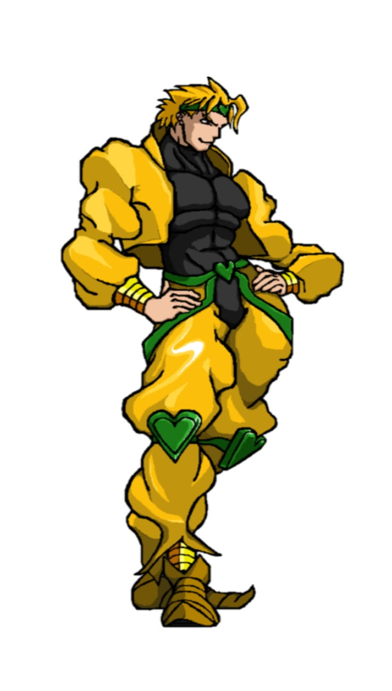
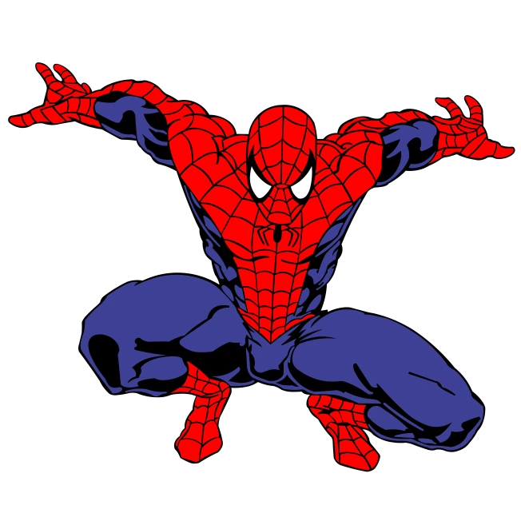

Em um mundo repleto de desafios e mistérios, Shrek, embarca em uma jornada de desbravamento. Ele decide explorar terras desconhecidas, onde lendas falam de relíquias poderosas e segredos antigos.
Ao longo de sua jornada, Shrek enfrenta o Homem-Aranha e Dio Brando para decifrar enigmas antigos.
Dio Brando, um homem de ambições colossais, sempre buscou poder e reconhecimento. Seu passado foi marcado por escolhas controversas, mas, em um momento de reflexão, ele decide enfrentar Shrek através de uma jornada inusitada.
O Homem-Aranha é um ágil e destemido super-herói conhecido por suas habilidades aracnídeas. Equipado com lançadores de teias, ele pode se mover rapidamente entre prédios, desviar de ataques e criar estratégias acrobáticas únicas. Além disso, sua força proporcional de aranha e o "sentido aranha" aprimoram seus reflexos, permitindo que ele reaja rapidamente a ameaças. Na batalha, o Homem-Aranha é um mestre em combate corpo a corpo, combinando agilidade e inteligência para enfrentar o seu adversários shrek de todas as formas e tamanhos.
